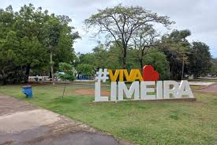

Pontos Turísticos da cidade

Teatro Vitória
Espaço cultural central de Limeira, ideal para teatro, dança e música, com arquitetura moderna.
Estádio Major José Levy Sobrinho (Limeirão)
Principal estádio de Limeira e casa da Inter, une esporte e paixão local.

Gruta da Paz
Foi concebida para servir como coreto, tendo sido construída à época da 1ª Guerra Mundial como monumento à paz
Ponte do esqueleto
Estrutura metálica histórica, um marco arquitetônico e fotográfico da cidade.
Shopping Pátio
Centro de compras com lojas, cinema e praça de alimentação, ideal para lazer.

Parque Cidade (Hípica)
Grande espaço verde para caminhadas, esportes e piqueniques ao ar livre.
Horto Florestal
Área preservada com trilhas e natureza, perfeita para lazer e estudos ecológicos.